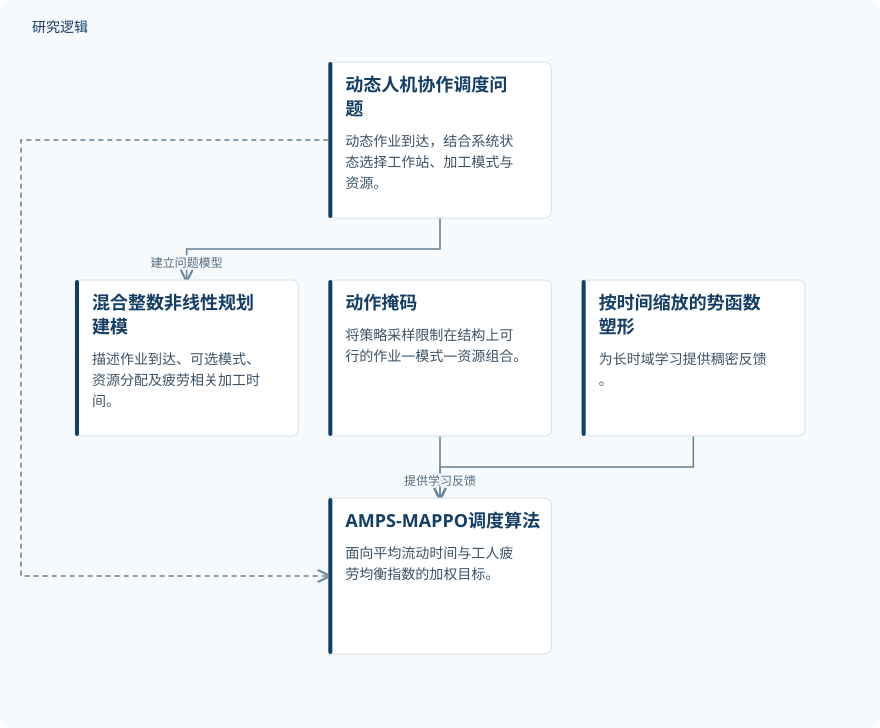

摘要解读
考虑人机协作与工人疲劳的动态并行机调度多智能体强化学习
Multi-Agent Reinforcement Learning for Dynamic Parallel-Machine Scheduling with Human–Robot Collaboration and Worker Fatigue
解读更新 2026-11-10 11:04 · 依据公开摘要整理，未核验全文细节
动态到达的作业如何在人、机器人与协作模式之间分配，才能兼顾生产响应与工人疲劳？这项研究把疲劳相关加工时间纳入并行机调度，并用多智能体强化学习协调效率与疲劳均衡。
文章目录
人机协作的灵活性，也有疲劳代价
研究关注具有人机协作的动态并行机调度问题：作业不断到达，需要根据实时系统状态分配至符合条件的工作站，并选择工人、机器人或人机协作加工。工人参与增加了操作灵活性，但疲劳积累也可能延长实际加工时间，使不同工人的疲劳分布失衡。
因此，研究不只追求作业更快完成，而是最小化平均流动时间与工人疲劳均衡指数的加权目标。这里的“疲劳”指工人疲劳，不能等同于结构材料的疲劳损伤或疲劳寿命。
以可行动作与稠密反馈辅助调度学习
作者建立混合整数非线性规划（MINLP）模型，描述动态作业到达、可选加工模式、工人与机器人分配，以及依赖疲劳状态的加工时间。这些因素共同构成了调度决策需要考虑的问题。
算法采用带动作掩码和势函数塑形的多智能体近端策略优化方法（AMPS-MAPPO）。动作掩码将策略采样限制在结构上可行的“作业—模式—资源”组合内；按时间缩放的势函数塑形则为长时域学习提供稠密反馈。两项机制分别针对动作可行性与学习反馈。
依据摘要整理的建模与算法关系示意


仅概括摘要明确陈述的问题、建模内容及算法机制，不代表论文原图，也不补充未报告的算法配置。
下载 SVG图示关系说明
实线表示相邻阶段的信息流，虚线表示跨阶段联系或反馈。
动态人机协作调度问题 → 混合整数非线性规划建模：建立问题模型；动态人机协作调度问题 → AMPS-MAPPO调度算法：设计调度算法；动作掩码 → AMPS-MAPPO调度算法：限制策略采样；按时间缩放的势函数塑形 → AMPS-MAPPO调度算法：提供学习反馈
平均流动时间下降，疲劳均衡指标表现更优
摘要报告，在不同规模的动态算例上，AMPS-MAPPO实现了毫秒级在线推断。相较最佳派工规则基准，平均流动时间降低40.98%；相较深度强化学习基线，降低8.17–20.92%。这些降幅对应不同的比较对象，不能混为同一组结果。
在参与比较的深度强化学习算法中，该方法还取得了最低的总体工人疲劳均衡指数。该结果支持其在摘要所述评价范围内兼顾效率与疲劳均衡，但不能据此认定每名工人的绝对疲劳水平都下降。
算例范围与实际部署条件仍需查阅正文
仅凭摘要，无法判断动态算例的具体数量、规模配置、到达过程，以及疲劳模型的参数来源和验证方式。比较算法的完整名单、训练预算、重复试验与统计不确定性也未在摘要中交代；这不等于论文没有开展相关工作。
毫秒级推断说明了摘要报告的在线计算速度，但其硬件条件与计时范围尚不明确。加权目标如何设定权重、效率和疲劳均衡之间如何取舍，以及是否经过真实生产现场验证，也需要进一步阅读确认。
阅读启发：区分疲劳均衡与疲劳降低
阅读启发：这项研究值得关注的是，将人的状态变化纳入实时资源分配，而非只把工人视为固定加工能力。进一步阅读时，可优先核对疲劳均衡指数的定义、疲劳与加工时间的关系，以及目标权重对结果的影响，避免把“分布更均衡”直接理解为“所有人更轻松”。
以上为本站阅读启发与建议，不是论文已验证的结论。